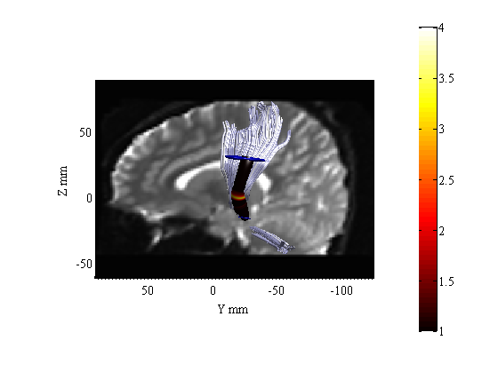

Contents
Run AFQ analysis for 2 groups (patients and controls)
[AFQbase AFQdata] = AFQ_directories;
sub_dirs = {[AFQdata '/patient_01/dti30'], [AFQdata '/patient_02/dti30']...
[AFQdata '/patient_03/dti30'], [AFQdata '/control_01/dti30']...
[AFQdata '/control_02/dti30'], [AFQdata '/control_03/dti30']};
sub_group = [1, 1, 1, 0, 0, 0];
afq = AFQ_Create('run_mode','test', 'sub_dirs', sub_dirs, 'sub_group',...
sub_group, 'showfigs',false);
[afq, patient_data, control_data, norms, abn, abnTracts] = AFQ_run(sub_dirs, sub_group, afq);
mrTrix is installed. To perform tracking based on CSD with mrTrix:
AFQ_Create(...,'computeCSD',1)
ANTs is installed. To perform alignment with ANTs:
AFQ_Create(...,'normalization','ants')
Whole-brain tractography was already done for subject /home/jyeatman/git/afq/data/patient_01/dti30
Fiber tract segmentation was already done for subject /home/jyeatman/git/afq/data/patient_01/dti30
Fiber tract cleaning was already done for subject /home/jyeatman/git/afq/data/patient_01/dti30
Computing Tract Profiles for subject /home/jyeatman/git/afq/data/patient_01/dti30
Whole-brain tractography was already done for subject /home/jyeatman/git/afq/data/patient_02/dti30
Fiber tract segmentation was already done for subject /home/jyeatman/git/afq/data/patient_02/dti30
Computing Tract Profiles for subject /home/jyeatman/git/afq/data/patient_02/dti30
Whole-brain tractography was already done for subject /home/jyeatman/git/afq/data/patient_03/dti30
Fiber tract segmentation was already done for subject /home/jyeatman/git/afq/data/patient_03/dti30
Fiber tract cleaning was already done for subject /home/jyeatman/git/afq/data/patient_03/dti30
Computing Tract Profiles for subject /home/jyeatman/git/afq/data/patient_03/dti30
Whole-brain tractography was already done for subject /home/jyeatman/git/afq/data/control_01/dti30
Fiber tract segmentation was already done for subject /home/jyeatman/git/afq/data/control_01/dti30
Computing Tract Profiles for subject /home/jyeatman/git/afq/data/control_01/dti30
Whole-brain tractography was already done for subject /home/jyeatman/git/afq/data/control_02/dti30
Fiber tract segmentation was already done for subject /home/jyeatman/git/afq/data/control_02/dti30
Fiber tract cleaning was already done for subject /home/jyeatman/git/afq/data/control_02/dti30
Computing Tract Profiles for subject /home/jyeatman/git/afq/data/control_02/dti30
Whole-brain tractography was already done for subject /home/jyeatman/git/afq/data/control_03/dti30
Fiber tract segmentation was already done for subject /home/jyeatman/git/afq/data/control_03/dti30
Fiber tract cleaning was already done for subject /home/jyeatman/git/afq/data/control_03/dti30
Computing Tract Profiles for subject /home/jyeatman/git/afq/data/control_03/dti30
Run a t-test to compare FA along each fiber tract for patients vs. controls
for jj = 1:20
[h(jj,:),p(jj,:),~,Tstats(jj)] = ttest2(afq.patient_data(jj).FA,afq.control_data(jj).FA);
end
Make Tract Profiles of T statistics
fg = dtiReadFibers(fullfile(sub_dirs{3},'fibers','MoriGroups_clean_D5_L4.mat'));
dt = dtiLoadDt6(fullfile(sub_dirs{3},'dt6.mat'));
numNodes = 100;
[fa, md, rd, ad, cl, volume, TractProfile] = AFQ_ComputeTractProperties(fg,dt,numNodes);
for jj = 1:20
TractProfile(jj) = AFQ_TractProfileSet(TractProfile(jj),'vals','pval',p(jj,:));
TractProfile(jj) = AFQ_TractProfileSet(TractProfile(jj),'vals','Tstat',Tstats(jj).tstat);
end
Render The tract Profiles of T statistics
cmap = 'hot';
crange = [1 4];
numfibers = 200;
AFQ_RenderFibers(fg(3),'color',[.8 .8 1],'tractprofile',TractProfile(3),...
'val','Tstat','numfibers',numfibers,'cmap',cmap,'crange',crange,...
'radius',[1 6]);
[roi1 roi2] = AFQ_LoadROIs(3,sub_dirs{3});
AFQ_RenderRoi(roi1,[0 0 .7]);
AFQ_RenderRoi(roi2,[0 0 .7]);
b0 = readFileNifti(dt.files.b0);
AFQ_AddImageTo3dPlot(b0,[-15,0,0]);
mesh can be rotated with arrow keys
